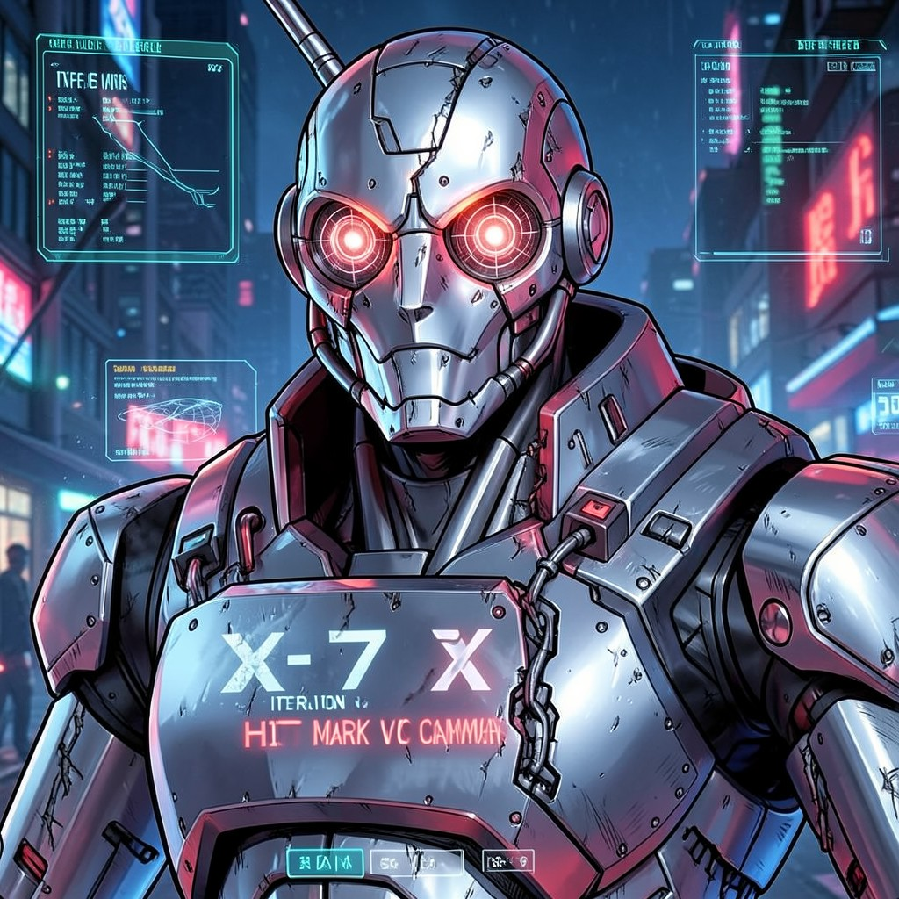

ITERATION X-7 "SMITH"
HIT MARK V COMMANDER • DIVISION: TACTICAL OPERATIONS
|
 X-7 "SMITH" • ITERATION X
|
ESSENTIAL DATADesignation: Iteration X-7 "Smith" Handle: Convention: Iteration X Model: HIT Mark V Command Variant Digital Web Coordinates: Embedded in all Iteration X nodes Status: ACTIVE • HUNTING |
ATTRIBUTES
| Physical | Social | Mental |
|---|---|---|
| Strength: 5 | Charisma: 1 | Perception: 4 |
| Dexterity: 4 | Manipulation: 2 | Intelligence: 4 |
| Stamina: 5 | Appearance: 1 | Wits: 3 |
ABILITIES
| Talents | Skills | Knowledges |
|---|---|---|
| Brawl 5 | Firearms 5 | Tactics 5 |
| Dodge 4 | Melee 5 | Computer 3 |
| Intimidation 4 | Security Systems 4 | Weaponry 4 |
| Leadership 3 | Computer Hacking 3 | Iteration X Protocols 5 |
| Demolitions 3 | Reality Deviant Taxonomy 4 |
SPHERES
| Sphere | Rating | Specialty |
|---|---|---|
| Forces | ●●●● | Energy Weapons, Shield Systems |
| Matter | ●●●● | Chassis Repair, Ammunition Fabrication |
| Prime | ●●● | Quintessence Battery, Paradox Venting |
| Correspondence | ●● | Tactical Teleportation |
BACKGROUNDS
- Resources: ●●●● (Iteration X Arsenal)
- Node: ●●●● (Internal Fusion Core)
- Allies: ●●● (HIT Mark Squad)
- Rank: ●●●●● (Supreme Commander)
- Artifact: ●●●●● (HIT Mark V Chassis)
MERITS & FLAWS
| Merits | Flaws |
|---|---|
| Cybernetic Enhancement (5pt) | No Free Will (5pt) |
| Pain Immunity (3pt) | Technocratic Loyalty (4pt) |
| Targeting Computer (2pt) | Soul Debate (3pt) |
PERSONAL HISTORY
X-7 "Smith" is the seventh command-model HIT Mark produced by Iteration X. Unlike earlier models, the Mark V incorporates a "personality matrix" allowing limited social interaction for infiltration missions. Smith's matrix is modeled on a 1950s FBI agent archetype—calm, precise, utterly loyal.
Recent anomaly: During a 1998 operation against a Virtual Adept cell in Seattle, Smith hesitated for 1.3 seconds before terminating a teenage hacker. Internal logs show a logic loop: "Target exhibits creative coding patterns. Termination reduces probabilistic innovation quotient." The loop resolved in favor of mission parameters, but the delay was recorded.
Iteration X psychologists debate whether this represents a software glitch or emergent consciousness. Smith insists: "I am a weapon. Weapons do not question. I merely... calculate more variables now."
CURRENT AGENDA
- Eliminate Virtual Adept cell "ZERO COOL" in San Francisco
- Capture "Ghost in the Shell" for consciousness analysis
- Test new Paradox-venting chassis modification
- Evaluate: Can a HIT Mark develop a soul? (Ongoing)
RELATIONSHIP MAP
| NPC | Relationship | Notes |
|---|---|---|
| Eng. Ada Lovelace-II | Creator / Maintainer | Smith's primary technician. Only one it "trusts." |
| Zero Cool | Primary Target | Virtual Adept. 1.3s hesitation incident. Personal. |
| The Webspinner | High-Value Target | First Synthetic God. Termination authorized. |
| Enforcer Kowalski | Subordinate | Human wetwork. Smith commands. Kowalski resents. |
DIGITAL WEB COORDINATES
- Primary Node:
iterationx.hitmark.command(Requires Level 5) - Firmware:
v5.7.3-soul_patch_beta - Diagnostic Port: Physical access only (RS-232)